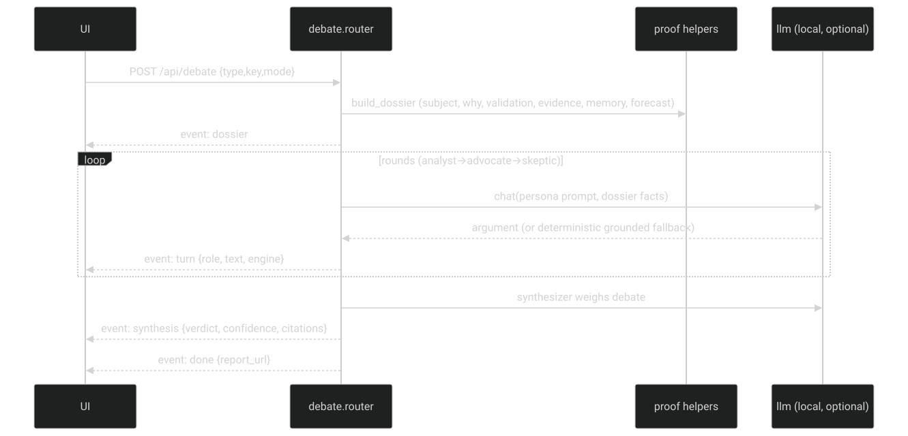
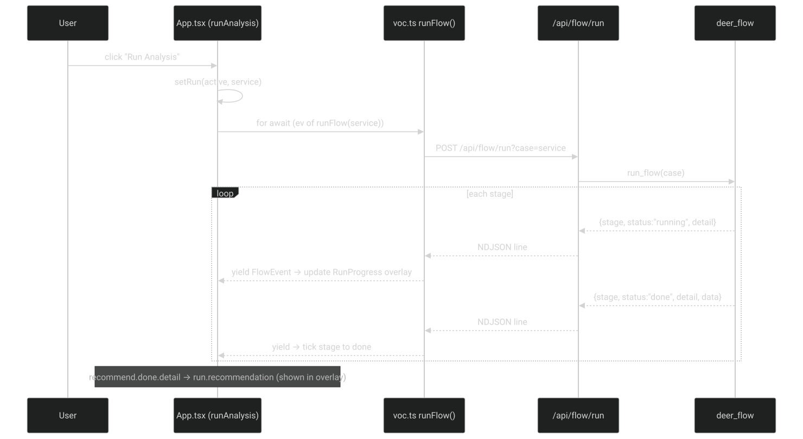

System Workflow Diagrams — companion to docs/SYSTEM_WORKFLOW_MAP.md
Generated from the dev branch · voc360 → graph → root cause → recommendation
Browser → FastAPI routers → optional engines → voc360 (read-only).

main.py mounts each router behind try/except; engines are optional.

connect → ingest → graph → rootcause → recommend; LangGraph or pure-Python fallback.

forecast · whys · validate · ask · suggest — every box has a grounded fallback.

analyst → advocate → skeptic → synthesizer, over one grounded dossier.

NDJSON FlowEvents drive the RunProgress overlay stage-by-stage.

Dashboard → Run → Graph → Root Cause → Solutions → Simulation → Decisions.
